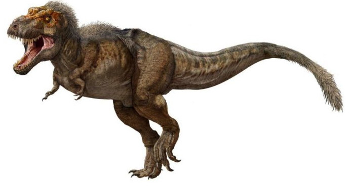

O Tiranossauro Rex, que significa ‘lagarto tirano rei’ ou ‘réptil tirano’, foi um dos dinossauros carnívoros de maior porte, adaptado ao ambiente terrestre, somente superado pelo Giganotossauro e pelo Carcarodontossauro, provavelmente os integrantes mais mansos desta família. Sua organização física atingia 5 metros de altitude e mais de 14 metros de extensão.
Ele caminhava geralmente na postura vertical – era, portanto, bípede, como o ser humano e os primatas - e habitava o território atualmente conhecido como América do Norte, no final da era cretácea, ou seja, no período Mesozóico, situado entre 145,5 milhões e 65 milhões de anos atrás.